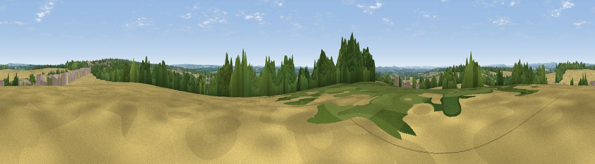

Weston Down
#37857 in England · top 72% of its area beats it · near Micheldever StationWhere it is
The exact computed spot (SU 51113 43298). Click the marker for map links.
The view, rendered

A 360° render of this exact spot computed from the terrain model, tree cover and land cover — summer colours, afternoon light, calibrated against photographs of famous viewpoints. Real trees, hedges and buildings will differ in detail.
The panorama
Grey silhouette: terrain skyline in each direction (720 bearings, Earth curvature and refraction included). Dashed green: skyline with trees (+15 m) and buildings (+8 m) as obstacles. Blue strip: how far the ground is visible on each bearing.
Where the view opens
Wedge length = distance to the farthest visible ground on that bearing (vegetation-aware). Rings at 10, 25 and 50 km.
What fills the view
63% cropland · 25% woodland · 9% grassland · 3% built-up
Angular shares of the visible panorama (visual magnitude), not map area. Landscape diversity 0.42 (0–1 Shannon).
Key numbers
More beautiful places nearby
The staircase of upgrades: each row has a higher view potential than everything closer. Driving times are estimates from straight-line distance, calibrated against real road routing — check an actual route before setting out.
| Place | Direction | Drive | Score |
|---|---|---|---|
| Cocksford Down | ENE · 3 km | ~8 min | 47.0 |
| Viewpoint near Dummer | ENE · 10 km | ~19 min | 50.9 |
| Cottington's Hill | N · 13 km | ~24 min | 65.6 |
| Watership Down | N · 14 km | ~25 min | 71.4 |
| Beacon Hill | NNW · 15 km | ~27 min | 76.7 |
| Viewpoint near Buriton | SE · 31 km | ~48 min | 80.0 |
| Beacon Hill | SE · 39 km | ~58 min | 85.8 |
| Mottistone Down | S · 60 km | ~82 min | 87.2 |
51.18663, -1.27003 · source: osm peak · position refined by local search. Computed location — check access rights before visiting.